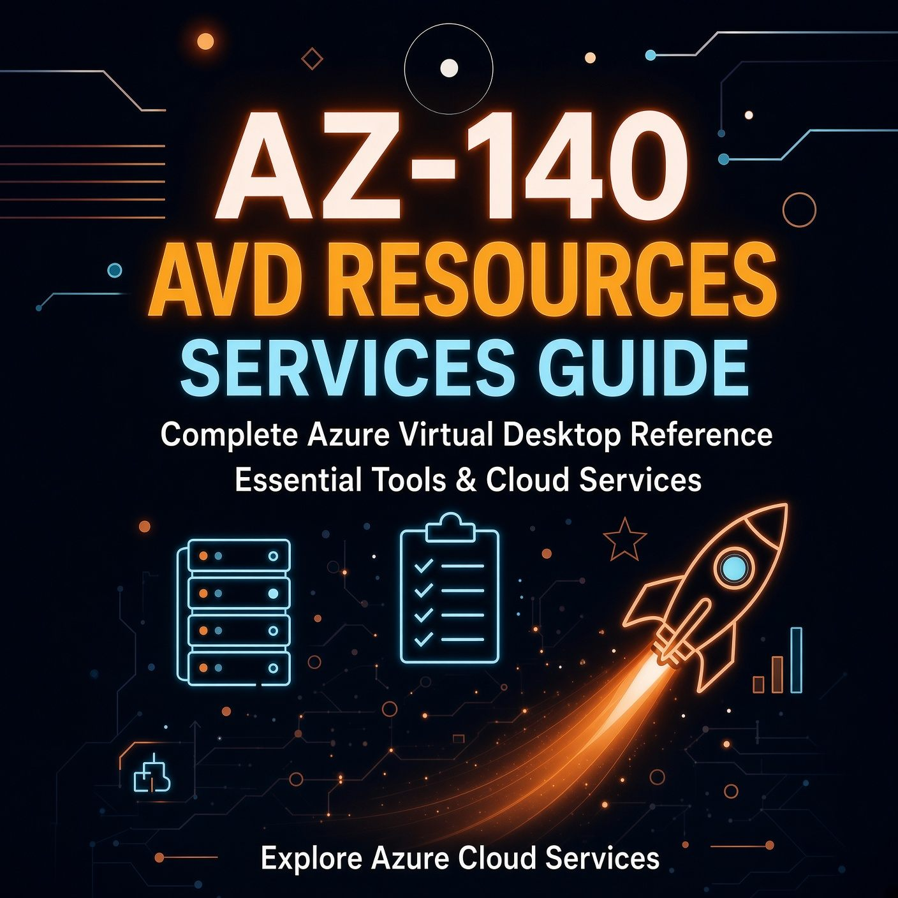

AZ-140 Core Resources and Services for Azure Virtual Desktop Explained
Host pools and workspaces confuse newcomers because they sound similar. Add FSLogix, Entra ID flavours, and RDP Shortpath and the map gets messy. This guide lays out each resource, the service it depends on, and how AZ-140 tests the connections.

Azure Virtual Desktop is not a single product. It is a control plane that orchestrates Azure resources you already know: VMs, virtual networks, storage, and identity. AZ-140 tests whether you can choose the right type of each resource and wire them together. The study guide splits this across all four domains, with the heaviest weight on infrastructure. Start with the resource map, then learn the dependencies.
The four layers
Think of AVD in four layers.
- Access layer: workspace and application groups. Users see this.
- Compute layer: host pool and session hosts. Sessions run here.
- User data layer: FSLogix and storage. Profiles roam here.
- Foundation layer: identity, networking, and monitoring. Everything depends on it.
When a user double-clicks a desktop icon, the client queries the workspace, checks application group assignment, the service picks a host from the pool based on load balancing, the host mounts the FSLogix container from storage, and identity plus network policies decide if the connection is allowed. One failure in that chain and you troubleshoot by layer.
Access layer: workspaces and application groups
Workspace
The workspace is the feed. Users subscribe to it in Windows App or the web client. It holds references to application groups, not desktops directly. One workspace can aggregate groups from multiple host pools, so a user sees one feed even if you split pools by workload or region. Workspaces cost nothing.
Application groups
Application groups control what a user can launch. Two types:
- Desktop: publishes the full Windows desktop from the hosts in one pool. Use it when users need the shell, Explorer, and freedom to run installed apps.
- RemoteApp: publishes individual apps. The user sees Word or a line-of-business app as if it were local. Available only with pooled host pools. You can create multiple RemoteApp groups per pool to segment apps by role.
Users gain access when you assign them the Desktop Virtualization User role on the application group. Groups are better than direct user assignment for scale.
Compute layer: host pools and session hosts
Host pool
The host pool is the container for session hosts and the policy for how sessions land.
- Type: Pooled hosts are shared, multiple users per VM on multi-session OS, or one user per VM in a pool that reassigns VMs. Good for cost efficiency. Personal hosts are dedicated, one VM per user, persistent assignment. Good for admins or users who install drivers or need guaranteed resources.
- Assignment: Pooled pools assign automatically. Personal pools assign automatically or direct, where you map a specific user to a specific VM.
- Load balancing: Breadth-first spreads sessions across hosts, better for performance. Depth-first fills one host before using the next, better for cost, pairs well with scaling plans.
Session host configuration and management
New pools use a session host configuration. It stores VM size, OS image, name prefix, virtual network, availability zones, identity join, and local admin credentials via Key Vault. A companion session host management policy handles updates: maintenance window, logoff message, how many VMs to update at once. This replaces manual golden image swaps for many shops.
Session hosts
Session hosts are Azure VMs running Windows 10 or 11 Enterprise multi-session, or Windows Server with the Remote Desktop Session Host role. Multi-session lets you host many users on one VM, cuts cost per user, but apps must tolerate session sharing. Single-session suits GPU or legacy apps that need exclusivity. Every host in a pool must use the same image, size family, and identity join. Do not mix Entra ID joined and AD DS joined hosts in one pool.
User data layer: FSLogix and storage
Pooled hosts are stateless by design. When you reimage a host, you lose local profiles. FSLogix fixes this.
Profile Containers
FSLogix Profile Container redirects the whole Windows profile into a VHD stored on an SMB file share. At sign-in, the service attaches the VHD. The user sees a local profile experience, but the data lives off the VM. Include Microsoft 365 data in the same container to avoid a separate Office Container unless a specific scenario demands two.
ODFC and application masking
FSLogix ODFC containers isolate Office data alone. You need them only if you keep profile and Office data on separate stores or handle a migration. Application masking hides apps from certain users on a shared host without separate images, useful for role-based visibility.
Cloud Cache
Cloud Cache replicates the profile to multiple locations and treats the cache as authoritative. Use it for business continuity across regions or when you need resilience against storage blips. It adds complexity and latency, so reserve it for multi-region active-active or critical users.
Storage choices that map to FSLogix
| Service | When to use | What it gives you |
|---|---|---|
| Azure Files Standard (HDD) | Small lab, low cost, prototype | SMB share, pay-as-you-go, moderate IOPS |
| Azure Files Premium (SSD) | Production pooled hosts under 1000 users per share | Low latency, provisioned IOPS and throughput, supports thousands of concurrent users |
| Azure NetApp Files | Large or latency-sensitive workloads | Sub-millisecond latency, high throughput, snapshot-based backup |
| Azure Files with AD DS or Entra Domain Services | AD DS joined hosts, traditional NTFS permissions | Domain-joined storage account, Kerberos auth with RC4 or AES |
| Azure Files with Entra ID (hybrid identities) | Entra ID joined hosts with hybrid users | Profile on Azure Files using Entra Kerberos, users synced from AD DS to Entra ID |
Entra ID joined hosts still need a hybrid story for file share auth. Use hybrid users synced via Entra Connect with the storage account joined to AD DS, or Entra Kerberos on Azure Files. Note the 2026 Kerberos shift from RC4 to AES-SHA1. Shares that still expect RC4 fail after you patch.
Foundation: identity
AZ-140 tests three identity scenarios:
- Entra ID joined. No domain join, modern auth, Conditional Access, single sign-on. Needs Virtual Machine User Login and hybrid identities for FSLogix.
- AD DS. Hosts joined to AD DS, Group Policy applies, line-of-sight to domain controllers. Needed for on-prem resources or existing GPOs.
- Entra Domain Services. Managed domain without running controllers. Simpler, but less GPO control.
Conditional Access applies to AVD. If you require MFA on the Azure Windows VM Sign-In app without excluding it or using Hello for Business, Entra ID logons fail. The domain join account cannot have MFA because provisioning runs non-interactively.
Foundation: networking
Hosts live in your VNet while the control plane lives in Microsoft’s cloud. That split causes the trickiest failures.
- VNet and subnets. Use a dedicated subnet for hosts. Verify outbound to the safe URL list, then apply NSGs. Start open, then restrict.
- RDP Shortpath. Default reverse connect uses TCP. Shortpath adds direct UDP. Managed networks need inbound UDP 3390 and a listener enabled via Intune or Group Policy. Public networks use STUN or TURN with no inbound rule. The exam tests which case needs the port.
- Private Link, Bastion, JIT. Private Link puts AVD traffic on private endpoints for compliance. Bastion gives RDP without public IPs. JIT narrows admin access windows via Defender for Cloud.
App delivery: images and MSIX app attach
Three options cover most scenarios:
- Baked image. Sysprep a golden image, store versions in Compute Gallery, deploy hosts from it. Stable but slow to update.
- MSIX app attach. Packages stay on a file share and attach at logon. Update the app without reimaging. Create the package, stage it on Azure Files, register it to the host pool.
- Microsoft 365 and Teams. Use shared computer activation for Microsoft 365 Apps. Teams needs the WebRTC Redirector Service on the host. OneDrive needs Files On-Demand for multi-session.
Operations: monitoring, scaling, and resilience
Monitoring
Send diagnostics from host pool, workspace, and app groups to a Log Analytics workspace. Insights is a workbook on that data. It shows duration, errors, and host health. Key tables: WVDConnections, WVDErrors, WVDManagement.
Scaling and BCDR
Scaling plans start and stop hosts by schedule. Start VM on Connect wakes a host when a user signs in. Back up FSLogix shares via Recovery Services vault. For DR, replicate images via Compute Gallery and keep a second host pool in the paired region with replicated profile storage.
How it all connects
- User subscribes to ws01 in Windows App.
- Entra ID and Conditional Access allow the connection, service checks Desktop Virtualization User on the app group.
- Control plane picks a host from hp01 per load balancing policy.
- Transport negotiates Shortpath UDP or fallback TCP. Private Link keeps it private if set.
- Host mounts the FSLogix VHD from Azure Files and loads MSIX apps.
- Metrics flow to Log Analytics.
Slow Teams points to Shortpath. Slow logon points to FSLogix share. Empty feed points to app group assignment.
Quick exam checklist
| Resource | Key choice | Service it depends on |
|---|---|---|
| Host pool | Pooled vs personal, breadth vs depth | Load balancer policy, session host config |
| Session host | Multi-session vs single-session, image | Compute Gallery, VM Image Builder, VM size |
| Workspace | One feed for many groups | Application group registration |
| Application group | Desktop vs RemoteApp | Host pool type, user RBAC |
| FSLogix | Profile vs Cloud Cache | Azure Files / NetApp Files, hybrid identity, NTFS + share perms |
| Identity | Entra ID vs AD DS vs Entra DS | Entra ID, Conditional Access, VM login roles |
| Network | Shortpath managed vs public | VNet, NSG, Firewall, Private Link |
| Monitoring | Diagnostics to LAW | Log Analytics, Azure Monitor, Insights |
| Apps | Image vs MSIX app attach | MSIX package, file share, host pool scope |
| Scaling | Scaling plan vs Start VM on Connect | Host pool capacity, autoscale, scaling plan schedule |
Where to go next
Build the lab from the companion post, then add one layer at a time. First FSLogix on Azure Files Premium with a hybrid user, then RDP Shortpath for managed networks with a UDP 3390 rule, then an MSIX app attach package. Each addition maps to a skills-measured bullet and gives you a failure mode to troubleshoot, which is exactly how AZ-140 tests you.
Resources
- AZ-140 study guide – skills measured as of July 2026
- Prerequisites for Azure Virtual Desktop
- Supported identities and authentication methods
- What is FSLogix
- Storage options for FSLogix profile containers
- Azure Virtual Desktop network connectivity
- Configure RDP Shortpath
- Azure Virtual Desktop Insights
Updated September 2026. Portal names shift. When a blade moves, search the Learn path for the current navigation.